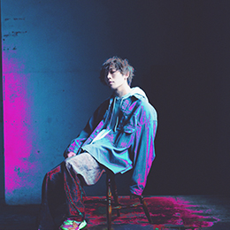

<div id="modal" class="profile">
  <div class="modal-page">
    <ul>
      <li>
        <p class="airtist">
          
          <span>バルーン（須田景凪）</span>
        </p>
        <div class="text">
          2013年より“バルーン”名義でニコニコ動画にてボカロPとしての活動を開始。<br> 
          代表曲「シャルル」はセルフカバーバージョンと合わせ、YouTubeでの再生数は現在までに1億回再生を記録しており、JOYSOUND の 2017 年発売曲年間カラオケ総合ランキングは1位、年代別カラオケランキング・10代部門では3年連続1位を獲得し、現代の若者にとっての時代を象徴するヒットソングとなっている。 <br>
          2017年10月、自身の声で描いた楽曲を歌う“須田景凪”として活動を開始。2021年2月に、ワーナーミュージック・ジャパン内のレーベルunBORDEよりメジャー1stフル・アルバム「Billow」をリリースし、オリコンウィークリーチャート7位にランクイン。<br>
          作詞・作曲・編曲の全てを手掛け、ベットルームで音源制作からレコーディング、音源発表まで行う究極のベッドルームポップ・ミュージックが、多くの若者から支持を集めている。
        </div>
      </li>
    </ul>
  </div>
</div>